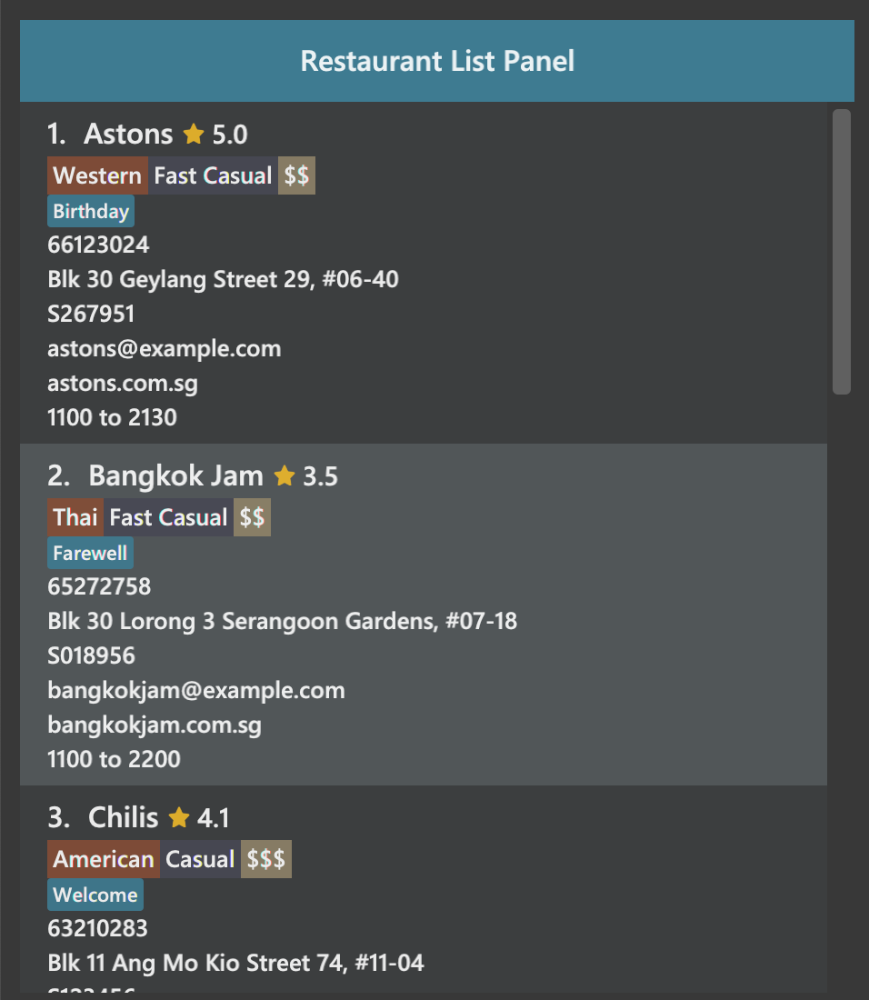
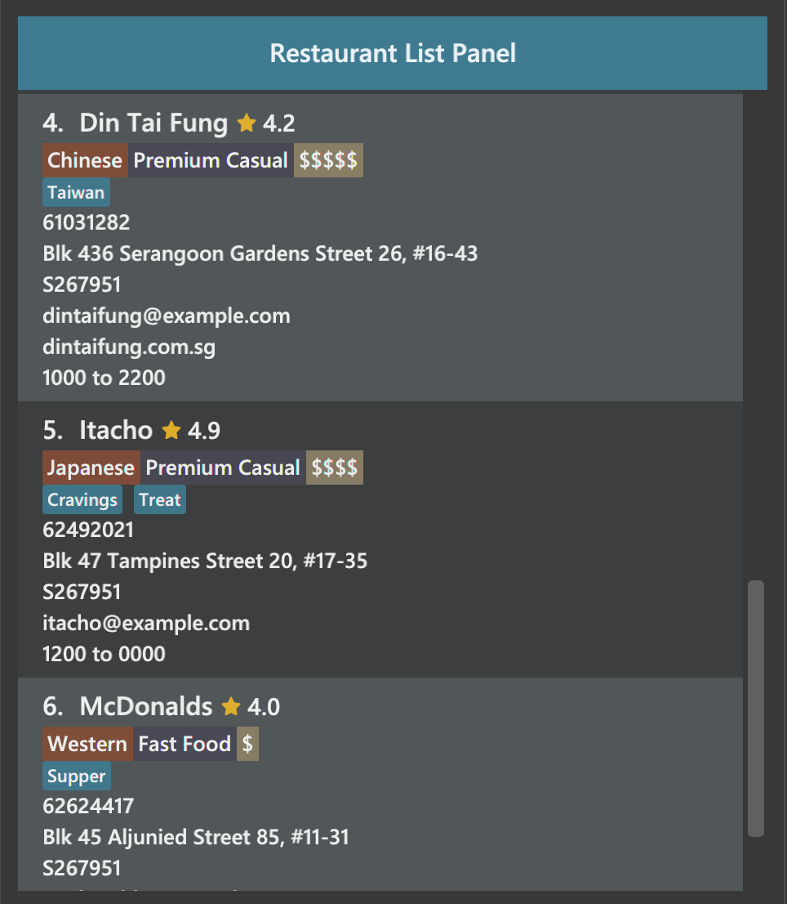
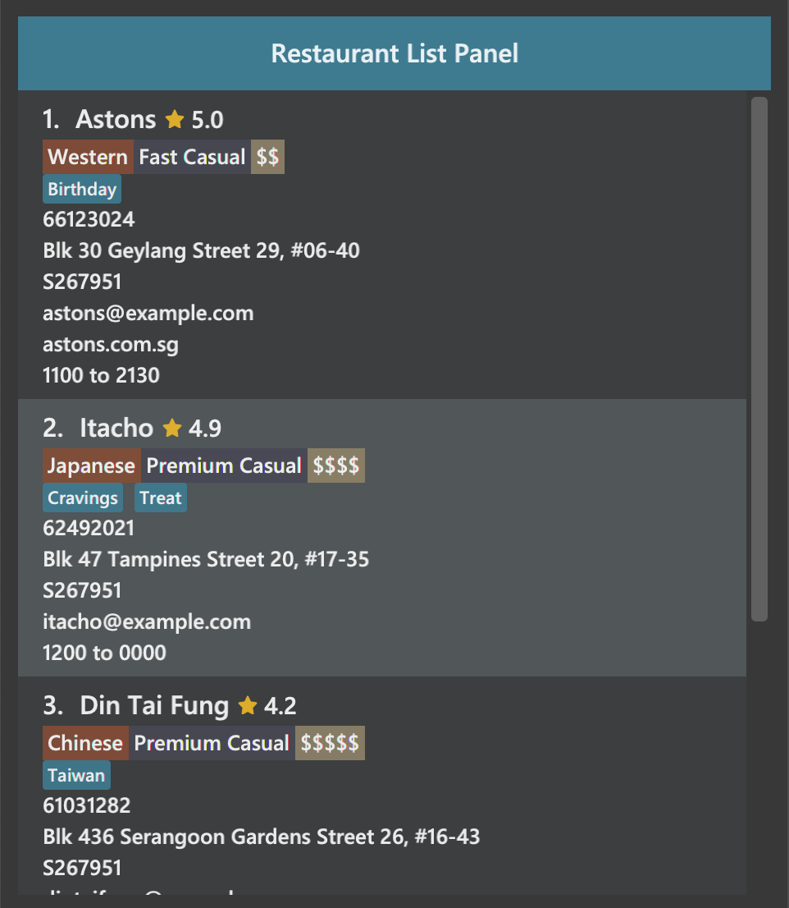

Koh Wei Xin - Project Portfolio for The Food Diary
Overview
This project portfolio page documents my contributions to The Food Diary, a software engineering project undertaken as part of the Software Engineering module, CS2103T, during my undergraduate studies in the National University of Singapore (NUS). This application is written in Java and has about 10,000 lines of code. It utilizes Command Line Interface (CLI) and has a Graphical User Interface (GUI) created using JavaFX.
The Food Diary is a desktop application morphed from a basic CLI AddressBook. Through our Software Engineering module, CS2103T, my team and I chose to morph the AddressBook into a The Food Diary for food lovers of all ages to document their very own food adventure.
In this project, I was tasked with enhancing the user’s experience by enabling them to display the average ratings from their reviews for each restaurant and sort the restaurants according to these ratings.
Summary of Contributions
The following shows a summary of the contributions I made to this team project.
-
Major Enhancement: I added the ability to sort restaurants according to their average ratings.
-
What it does: Sorts the list of restaurants according to their average ratings and allows users to filter to the top or bottom ranks of restaurants.
-
Justification: This feature significantly improves the product by allowing users to organise their Food Diary from most to least (or vice versa) liked restaurants and allow them to have easier access to their favourite restaurants.
-
Highlights: The creation of this feature required in-depth analysis of other alternatives before structuring its model.
-
-
Minor Enhancement: I implemented the generation and display of average restaurant data.
-
What it does: Generates average rating from all the reviews of a restaurant and displays it as part of the restaurant’s information card as well as in its summary.
-
Justification: This feature improves the product significantly because a user can now immediately see his/her personal ratings across all the visits they have made for a restaurant.
-
Highlights: This enhancement relies heavily on XML-based user interface markup language, FXML. Thus, I had to learn pick up this language from scratch to display this new
UiPart. The implementation was also challenging as it involved multiple components, namelyModel,LogicandUi.
-
-
Other Contributions:
-
Project Management:
-
Enhancements to Existing Features:
-
Documentation:
-
Community:
-
Reported bugs and suggestions for other teams in the class (Issue Tracker)
-
Tools:
-
Setup Reposense (#83)
-
-
Contributions to the User Guide
Given below are sections I contributed to the User Guide. Since our project is a Food Diary targeted at food lovers, we have
come up with instructions on how to use the application for users of all ages. The following is an excerpt about the |
Sorting restaurants by rating: sort
Sorting your restaurants from favourite to least favourite, or vice versa, has never been easier.
Order all of the restaurants in the Food Diary from highest to lowest ratings based on the average ratings from all the reviews that you have given each restaurant.
Format: sort [or/ORDER] [l/LIMIT]
|
|
Examples:
-
sortorsort or/DES
Both will sort your list of restaurants in descending order of ratings. -
sort or/asCorsort or/ASC
Both will sort your list of restaurants in ascending order of ratings. -
sort or/ASC l/2
Your list of restaurants will be sorted in ascending order of ratings and you will only see the restaurants with the 2 lowest ratings displayed.
|
Restaurants with no reviews will have no ratings, and will thus have an |
Example of usage:
-
Before the
sortcommand is executed, the following shows the list of restaurants in the restaurant list.
 
Figure 1. List of restaurants before sorting, take note of their unordered ratings
-
After 2 different
sortcommands are executed
|
 |
Figure 2. List of restaurants with the 2 lowest ratings in ascending order is obtained when the command |
Figure 3. List of restaurants with the 3 highest ratings in descending order of ratings is obtained when the command |

Selecting a restaurant : select
Select a restaurant based on its index on the list and display information about it.
Format: select INDEX
Examples:
-
select 3
Selects the restaurant in the displayed restaurants list with index 3 and displays its summary and reviews.

Figure 1. Before selecting any restaurant

Figure 2. After selecting restaurant with index 3, Chilis' summary and reviews are displayed in the second and third (from left to right) respectively
Contributions to the Developer Guide
Given below are sections I contributed to the Developer Guide. They showcase my ability to write technical documentation and the technical depth of my contributions to the project,
namely in the implementation of |
Display of Restaurants and Restaurant Details
In order to enhance user’s experience in the Food Diary, the select feature is enhanced and a new sort feature is implemented.
These two features complete the diary aspect of the application by generating total visits and average ratings from the user’s own reviews and allowing users to sort the restaurants to see their favourite ones.
This section describes the implementation of these two features.
Select Feature
The select feature displays a restaurant’s summary and reviews when it is selected.
The restaurant’s summary is made up its generated data, the average rating and total visits, which are calculated from the reviews of a restaurant in the Summary class.
Current Implementation
The select feature is a pre-existing one from AddressBook Level 4.
The enhancement made is to display greater quantity and quality of restaurant information upon selection.
You can refer to Figure 1 to see the chain of activities that happen when the select command is executed.
Figure 1. Activity Diagram for select command
The following describes how the select mechanism behaves at each step:
Step 1. User executes select INDEX command, with INDEX as a positive integer within the range of indexes in the filtered restaurant list.
Step 2. The FoodDiaryParser parses the user’s input and constructs a SelectCommandParser object, which then parses the input index into an Index object and constructs a SelectCommand object.
Step 3. The SelectCommand is executed and calls on Model#setSelectedRestaurant() to set the selected restaurant to be the restaurant with the target Index in the current filtered restaurant list.
Step 4. The listeners in the RestaurantSummaryPanel and ReviewListPanel pick up the new value of the selected restaurant and loads the restaurant’s summary and reviews respectively onto the GUI.
The RestaurantSummaryPanel does so by calling its own RestaurantSummaryPanel#loadSummary() operation, which retrieves the selected restaurant’s attributes such as Summary, and through it,
the restaurant’s avgRating and totalVisit.
A restaurant with no reviews is indicated with totalVisits = 0 and avgRating = -1. The number -1 is chosen as all user input Ratings can only be a number between [0, 5], thus -1 is a clear
indication that there is no avgRating for the particular restaurant. This is a clear check to decide whether the avgRating field displayed in the UI should be N.A..
|
There is no state change to the Food Diary as the select command only selects a restaurant from the current FilteredList of restaurants.
As such, this command cannot be undone or redone through the undo and redo commands respectively.
|
You can refer to Figure 2 for the internal implementation flow when a select command is executed.
Figure 2. Sequence Diagram for select command
Design Considerations
Two guiding design patterns are applied to this feature:
-
The Facade design pattern is used to allow access to
avgRatingandtotalVisitsof aRestaurantonly through itsSummaryclass. -
The Observer pattern is also applied in the UI component as the
RestaurantSummaryPanelandReviewListPanelgets updated automatically once the selected restaurant is changed through the use of a listener forselectedRestaurant.
Aspect: How to structure the Summary in the UI
-
Alternative 1 (current choice): Implement
Summaryas a class in theRestaurantpackage-
Pros: Applies Observer pattern and reduces duplicate code as calculation of
avgRatingonly has to be done once inSummaryclass to display it on bothRestaurantCardandRestaurantSummaryPanel. -
Cons: Results in coupling as it introduces dependency of
SummaryonReviewclass.
-
-
Alternative 2: Implement
Summaryas a class in the UI component that listens to changes in theReviewof theRestaurant-
Pros: Reduces dependency within Model component.
-
Cons: Increases duplicate code as
avgRatingof a Restaurant’sSummaryis displayed in both theRestaurantCardandRestaurantSummaryPaneland will thus have to be calculated twice.
-
Sort Feature
The sort feature allows users to sort the restaurants in the Food Diary in ascending or descending order of ratings, and even limit the number of top/bottom ranked Restaurants shown.
Current Implementation
The command format is sort [or/ORDER] [l/LIMIT] with optional ORDER and LIMIT parameters.
By default, the restaurants would be sorted in descending order of ratings with no limit applied.
You can refer to Figure 3 below for a better understanding of the activity flow of the sort command.
Figure 3. Activity Diagram for sort command
The majors components involved in the implementation of this feature are:
-
FoodDiaryParser, which parses the user’s input and constructs aSelectCommandParser, which then parses the input intoOrderandLimitand constructs aSortCommand. -
SortRating, which implementsComparator<Restaurant>, serves as a comparator to sort the restaurants in the Food Diary by itsavgRating. To construct this comparator, anOrderhas to be passed in to determine whetherSortRating#compare()will be indicating ascending or descending order. -
SortCommand, contains 2 sub-classes,OrderandLimit, which are used for the construction ofSortCommand.SortCommandis where theSortRatingcomparator is constructed and passed into theModel#sortRestaurantList()operation. The filtering of the sorted list to theLimit, if present, also takes place here.
The following shows how the sort mechanism behaves at each step.
Step 1. The user executes sort [or/ORDER] [l/LIMIT] command.
Step 2. The FoodDiaryParser parses the user’s input and constructs a SortCommandParser object, which then parses the inputs into Order and Limit objects, and constructs a SortCommand object using the Order and Limit constructed.
If there is no order in the user’s input, the default Order will be constructed using the String "DES".
|
If there is no limit in the user’s input, an Optional.empty() object will be used in place of Limit in the construction of a SortCommand object.
|
Step 3. The SortCommand is executed.
-
Step 3.1. A
SortRatingcomparator is constructed andModel#sortRestaurantList()call to sort the list of restaurants in the Food Diary. -
Step 3.2. If
Limitis present,SortCommand#filterToLimit()is called to get auniqueRatingslist fromModel#getUniqueRatings()to get the borderline of theavgRatingsto be included in the filtered list. A predicate containing the borderlineavgRatingis then created and passed intoModel#updateFilteredRestaurantList()to filter the sorted restaurant list. Else, ifLimitis not present, the predicate passed intoModel#updateFilteredRestaurantList()to display all restaurants.
Step 4. The sorted restaurant list is then stored in the Food Diary via Model#commitFoodDiary().
You can refer to Figure 4 below for a more detailed idea of how sort command is implemented internally.
Figure 4. Sequence Diagram for sort command
Design Considerations
Aspect: How to apply the Limit
-
Alternative 1 (current choice): Let
Limitdenote the number of ranks of restaurants to be displayed-
Pros: Accurately shows the top/bottom ranked restaurants.
-
Cons: More expensive operations required to limit ranks of restaurants as a unique ratings list has to be stored to get the limited ranks.
-
-
Alternative 2: Let
Limitdenote the number of restaurants to be displayed-
Pros: More intuitive to users.
-
Cons: Does not provide an accurate depiction of top/bottom restaurants as multiple restaurants with the same ratings may not be displayed.
-